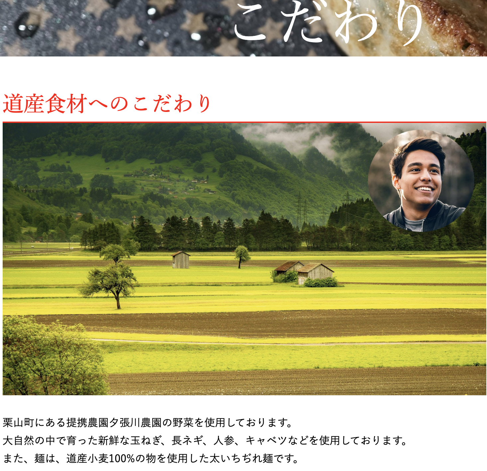

安田光の
ポートフォリオサイト
WORKS
私は、架空のラーメン店のホームページを作成しました。はじめにペルソナを設定しました。店舗から徒歩5分のところに一人で住んでいる、大学生20歳男性です。友人と外食をすることが多いです。友人は同じ大学の札幌市内や隣接する北広島市、江別市に住んでいます。
そして、ゴールは友人と一緒に来店してもらうことと設定しました。友人と一緒に来店してもらうには、友人と共有した時にあまり読み込まなくてもメニューや店舗についてわかりやすくすることが最も重要だと考えました。
そのため、ラーメンや餃子などが大きく見えるヘッダーの背景にしました。
また、メニューがしっかりと目立つように配色は白がメインでシンプルですが、キーからを赤にすることで、店の活気の良さを表しております。
また、『道産食材へのこだわり』では写真をPhotoshopdで編集しました。クリッピングマウスで生産者の顔を円の中に表示させております。